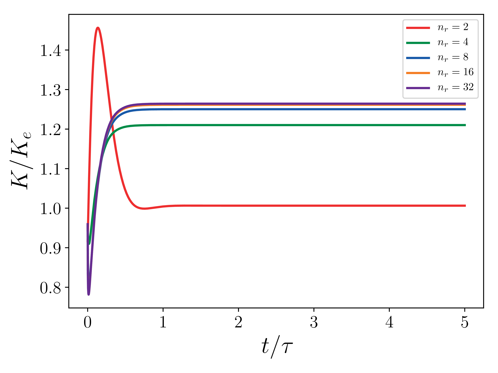

Correctness - Verification and Validation¶
PeleC undergoes significant testing to ensure correct operation. Synthetic tests are used to verify expected numerical performance (Verification); correctness of the results is established through a collection of physically meaningful tests that are used as the basis for a regression test suite (Validation). A suite of regression tests is run nightly and the results are posted here.
Verification of PeleC¶
Verification of PeleC uses MASA and auto-differention tools to implement the Method of Manufactured Solutions into PeleC.
The \(L_2\) error norm for a quantity \(s\) is defined as
where \(s^h\) is the numerical solution, \(s^*\) is the exact solution, and \(N_e\) is the number of elements. \(N\), used below, is the number of element on a side of the cube (\(N_e = N^3\)).
Building and running MMS¶
The user must first build and install MASA. This can be done from source or using Spack.
Building MASA from source¶
The user must build both Metaphysicl and MASA. After defining
METAPHYSICL_ROOT_DIR and MASA_ROOT_DIR:
$ git clone https://github.com/roystgnr/MetaPhysicL
$ ./bootstrap
$ ./configure --prefix=$METAPHYSICL_ROOT_DIR
$ make
$ make install
$ git clone https://github.com/manufactured-solutions/MASA
$ ./bootstrap
$ ./configure --enable-fortran-interfaces METAPHYSICL_DIR=$METAPHYSICL_ROOT_DIR --prefix=$MASA_ROOT_DIR --enable-python-interfaces
$ make
$ make check
$ make install
Building MASA using Spack¶
Assuming the user has Spack configured for their system, building and installing MASA is as easy as:
$ spack install masa
Linking MASA to PeleC and running¶
For the MMS problem setup, one must specify the install location for
MASA in the MASA_HOME variable. This can be done on the command
line either as:
$ export MASA_HOME=$MASA_ROOT_DIR
or, when compiling PeleC,
$ make -j 16 DIM=3 USE_MPI=TRUE MASA_HOME=$MASA_ROOT_DIR
where MASA_ROOT_DIR is the MASA install location. If using Spack
and after loading the MASA module, the MASA_ROOT_DIR will be
automatically populated.
After building the PeleC MMS executable, one can perform an MMS convergence study to demonstrate formal accuracy of the numerical implementation. Results of several MMS tests are detailed below.
Running the full MMS suite¶
The full MMS suite can be executed through the PeleCRegressionTesting test suite:
$ ./verify-pelec.sh
Testing the Euler equations¶
We can turn off diffusion in Pele and set the coefficients for those terms to zero in MASA to test the hydrodynamic update. A convergence study shows second order for Pele’s treatment of the hydrodynamic source. The initial solution was initialized to the exact solution and 100 pseudo-time steps were taken (fixed to \(10^{-8}\)). Periodic boundaries are imposed everywhere.
Density \(L_2\) error norm:

Velocity (u, v, w) \(L_2\) error norm:
{kind=link}
{kind=link}

Pressure \(L_2\) error norm:

Testing the compressible Navier-Stokes equations¶
For these cases, the Reynolds, Mach, and Prandtl numbers were set to 1 to ensure that the different physics were equally important (viscosity, conductivity, and bulk viscosity are non-zero and determined by the appropriate non-dimensional number). The CFL condition was fixed to 0.1 to ensure that the predictor-corrector time stepping method found a solution to the system of equations. The initial solution was initialized to the exact solution. Periodic boundaries are imposed everywhere. A convergence study shows second order for Pele’s treatment of the compressible Navier-Stokes equations.
Initial difficulties in getting the solution to reach steady state for the Euler equations (no diffusion) were overcome by incorporating diffusion effects and reducing the CFL number. Setting the Reynolds, Mach, and Prandtl to 1, and taking small time steps ensures that the pseudo-time integration (predictor/corrector) does not oscillate wildly and fail to find the steady-state solution. The iterative error was monitored and the final time (identical for all simulations) was chosen so that the iterative error was small, \(\mathcal{O}(10^{6})\) smaller than the discretization error. The iterative error never reaches machine zero. This is most likely due to the way in which the predictor/correct pseudo-time integration uses time steps based on the wave speeds and viscosity and not adjusting the time step based on the Jacobian of the system. An actual steady-state solver (rather than a pseudo-time integration to steady state) would be more efficient and more robust at finding the steady state solution of the MMS system of equations. While this would test the spatial discretization scheme, an MMS simulation with a steady state solver would fail to test the temporal discretization scheme.
Density \(L_2\) error norm:
{kind=link}
Velocity (u, v, w) \(L_2\) error norm:
{kind=link}


Pressure \(L_2\) error norm:
{kind=link}
Testing the adaptive mesh refinement algorithm¶
This setup is similar to the previous one except for the fact that this test uses the AMR framework. There are two grid refinement levels: a coarse grid covering the entire domain and a fine grid on top of this one covering 50% of the domain. The grids are fixed in time, i.e. they do not adapt based on the solution value. This test ensures that the algorithms dealing with the grid interfaces, time integration of the different levels, and level synchronization preserve the second order accuracy of the code.
Magnitude of velocity and mesh:

Velocity \(L_2\) error norm:
{kind=link}
Testing the constant Smagorinsky Large Eddy Simulation model¶
This setup is identical to the MMS study for the compressible Navier-Stokes equations. The Large Eddy Simulation (LES) constants, \(C_s\) and \(C_I\), were chosen such that the turbulent eddy viscosity was comparable to the viscosity, i.e. \(\frac{\mu_t}{\mu} = \mathcal{O}(1)\). Since the model scales with the mesh spacing, \(C_s\) and \(C_I\) were scaled inversely with the mesh spacing for the mesh refinement studies. For example, \(C_s\) is set to 2 for the \(8^3\) mesh and set to 4 for the \(16^3\) mesh (for \(C_I\), it is 1 and 4, respectively). A convergence study shows second order for Pele’s treatment of the compressible Navier-Stokes equations with the constant Smagorinsky Large Eddy Simulation model.
Density \(L_2\) error norm:

Velocity (u, v, w) \(L_2\) error norm:


Pressure \(L_2\) error norm:

Verification of EB PeleC¶
Verification of the EB capability in PeleC follows several different paths in order to ensure the widest coverage of scenarios. A short description and the source code for these test cases are included here.
C1. Method of manufactured solutions for EB¶
Case description¶
This is a similar test case problem as performed for PeleC verification using MASA to construct a manufactured solution. The MMS is performed around a sphere at a Re number and Mach number of 1.
\(L_2\) error norm of fields¶
{kind=link}

{kind=link}
{kind=link}
{kind=link}
Note
The first order convergence observed here is expected because the treatment of the EB surface is first order.
C3. Zero dimensional ignition with embedded boundaries¶
Case description¶
This case tests the chemistry implementation in the presence of embedded boundaries. The geometry is the displacement volume of a piston-cylinder system as shown in the first figure. The gas mixture consists of H2, O2 and N2 at mass fractions 0.06,0.5 and 0.44, respectively at an initial temperature/pressure of 1500K/1 atm. The LiDryer chemical mechanism is used in this case. The variation of temperature over time that characterizes ignition delay is shown in the second figure where PeleC solution compares well with Cantera.
{kind=link}
Comparison of temperature transients between Cantera and PeleC¶
{kind=link}
C7. Sod shock tube in rotated channel with AMR¶
Case description¶
This is the standard Sod shock tube problem. The geometry is a rectangular channel at \(30^\circ\) to the mesh. This case is run with multiple levels of AMR. The profiles shown below are through the channel centerline.
Density at t=0.1s¶

{kind=link}
{kind=link}
{kind=link}
{kind=link}
C8. Multi-species shock tube in a rotated channel with AMR¶
Case description¶
This case is a non-reacting multi-species shock tube problem that tests inviscid hydrodynamics and the handling of species in a domain with embedded boundaries. The geometry is a rectangular channel at \(30^\circ\) to the mesh. The left half of the channel is initialized with pure nitrogen while the right is initialized with helium. The pressure and density ratios are 0.1 and 0.125 respectively, similar to the Sod shock tube problem. This case is run with multiple levels of AMR. The figures shown below indicate mesh refinement at the embedded boundary, contact and shock discontinuities. The center-line density profile is compares well with data from literature.
{kind=link}
Field profiles in the centerline at t=0.2 L sqrt(rhoL/pL)¶
{kind=link}
C9. Acoustic wave in cylindrical channel¶
Case description¶
This is the case of an acoustic wave propagating in a cylindrical channel. The geometry is a \(x\)-direction aligned circular channel with periodic boundary conditions. The acoustic wave propagates along the \(x\) direction.
The density pulse at the center of the channel is defined as:
The background pressure is set to \(p_0 = 100000 erg/cm^3\), the background density is set to \(\rho_0 = 0.0014 g/cm^3\), \(\alpha=10^{-6} g/cm^3\), and \(\sigma=10cm\). The length of the channel is 100cm and the radius is 25cm. The simulations are performed for \(t=0.000625s\). The CFL is set to 0.001 to minimize time discretization errors.
Acoustic pulse at \(t=0.000625s\)¶
{kind=link}
Density profiles in the centerline at \(t=0.000625s\)¶
{kind=link}
\(L_2\) error norm of density¶
The \(L_2\) error norm for a quantity \(s\) is defined as
where \(s^h\) is the numerical solution, \(s^*\) is the exact solution, and \(n_x\) is the number of cells in the \(x\)-direction.
{kind=link}
Note
The second order convergence observed here is expected for this test case as all relevant physics happen in the direction perpendicular to the EB surface.
C10. Hagen–Poiseuille flow¶
Case description¶
This is the standard Hagen–Poiseuille flow. The geometry is a \(x\)-direction aligned circular channel with imposed pressure boundary conditions at the inflow and the outflow to enforce a driving pressure gradient \(dp /dx\). For this case, the Mach number is set to 0.1, the Reynolds number to 100, and the Prandtl number to 0.71. The background pressure is atmospheric and the background temperature is 300K. The cylinder radius, \(R\), is 1cm and the cylinder length, \(L\), is 12cm. The simulations are performed for 5 flowthroughs, at which point in time quantities such as kinetic energy and momentum are converged.
The exact solution at steady state is
where \(G = -dp/dx\), and \(\mu\) is the dynamic viscosity.
{kind=link}
\(L_2\) error norm of velocity¶
The \(L_2\) error norm for a quantity \(s\) is defined as
where \(s^h\) is the numerical solution, \(s^*\) is the exact solution, and \(n_r\) is the number of cells per radius.
{kind=link}
Note
The exact solution centerline velocity is adjusted by 0.7% to account for compressibility effects. The observance of second order behavior is attributed to the fact that this is a diffusion dominated problem and diffusion treatment at EB surfaces is second order.
Time convergence of kinetic energy¶
{kind=link}
Note
This figure shows that the compressible solution reached a steady state. It is not expected that the total integration of the kinetic energy in the domain match the incompressible value for integrated kinetic energy \(K_e\) because of compressibility effects.
C12. Smooth periodic problem¶
Case description¶
This is the standard smooth advection problem with \(u_0=1\), \(p_0=1\), and
This is an exact solution to the Euler equations and reduces them to simple linear advection with a constant velocity. Periodic boundary conditions are imposed. The gas constant is \(\gamma=1.4\). Usage of such a test case can be found in references such as Guan-Shan Jiang and Chi-Wang Shu. “Efficient implementation of weighted eno schemes”. J. Comp. Phys., 126:202–228 (1996) and Liska and Wendroff “Comparison of several difference schemes on 1D and 2D test problems for the Euler equations”. SIAM J. Sci. Comput., 25(3), 995–1017 (2006).
Simulations are performed in an \(x\)-direction aligned circular channel. The cylinder radius, \(R\), is 0.1cm and the cylinder length, \(L\), is 2cm. The simulations are performed until \(t=2\), at which point the wave is back at its starting location.
Density profiles in centerline¶
{kind=link}
\(L_2\) error norm of density¶
{kind=link}
Note
The second order convergence observed here is expected for this test case as all relevant physics happen in the direction perpendicular to the EB surface.
Validation of PeleC¶
The PeleC validation plan is aimed at exercising and validating the PeleC reacting flow capabilities. The following cases, described further on, are used for validation.
Decay of homogeneous isotropic turbulence
Non reacting Taylor-Green vortex breakdown
Reacting Taylor-Green vortex breakdown
Counter flow diffusion flame
Counter flow premixed flame
Flame-Vortex interaction
Sandia Flame D
Premixed ignition kernel in isotropic turbulence
Warning
This section is a work in progress. Several of these cases have yet to be performed and are noted as such.
Decay of homogeneous isotropic turbulence¶
Simulations were performed for turbulent Mach number = 0.1, Taylor scale based Reynolds number = 100, Prandtl number = 0.71, and k0 = 4 at several different resolutions (uniform discretization, no AMR) using a prescribed energy spectrum.
The definitions for the different quantities and reference data (in black) can be found in Johnsen et al. (2009) JCP and Movahed and Johnsen (2015) JFM. VisIt was used to post-process some quantities using visit_pp_aux_vars.py (located in the Exec/HIT folder) with the command
$ visit -nowin -cli -s Exect/RegTests/visit_pp_aux_vars.py
Generating the initial conditions¶
The initial conditions for this validation problem are derived from the following energy spectrum:
and can be generated with the Python script in the HIT directory:
$ python3 gen_hit_ic.py
Building and running¶
The decay of homogeneous isotropic turbulence case can be found in Exec/RegTests/HIT:
$ make -j 16 DIM=3 USE_MPI=TRUE
$ mpiexec -n 36 $EXECUTABLE inputs_3d
The user can run a convergence study by generating initial conditions
for higher resolutions and varying amr.ncell.
Results¶
As the resolution increases, there is good agreement between the Pele data and reference data.

10 Reynolds number as a function of time. Solid red: \(32^3\), dashed green \(64^3\), dash-dotted blue: \(128^3\), dotted orange: \(256^3\), black squares: Johnsen et al. (2009) JCP.¶
11 Mach number as a function of time. Solid red: \(32^3\), dashed green \(64^3\), dash-dotted blue: \(128^3\), dotted orange: \(256^3\), black squares: Johnsen et al. (2009) JCP.¶
12 Enstrophy as a function of time. Solid red: \(32^3\), dashed green \(64^3\), dash-dotted blue: \(128^3\), dotted orange: \(256^3\), black squares: Johnsen et al. (2009) JCP.¶

13 Kinetic energy as a function of time. Solid red: \(32^3\), dashed green \(64^3\), dash-dotted blue: \(128^3\), dotted orange: \(256^3\).¶
Taylor-Green vortex breakdown¶
This setup is one of the test problems outlined by the High-Order CFD workshop. A complete description of the problem can be found at NASA HOCFDW website and the reference data is found here. More details of the problem and methods used to obtain the reference data can be found in Bull and Jameson (2014) 7th AIAA Theoretical Fluid Mechanics Conference (doi: 10.2514/6.2014-3210) and DeBonis (2013) 51st AIAA Aerospace Sciences Meeting (doi:10.2514/6.2013-382).
Building and running¶
The Taylor-Green vortex breakdown case can be found in Exec/RegTests/TG:
$ make -j 16 DIM=3 USE_MPI=TRUE
$ mpiexec -n 36 $EXECUTABLE inputs_3d amr.ncell=64 64 64
The user can run a convergence study by varying amr.ncell.
Results¶
As the resolution increases, there is good agreement between the Pele data and reference data.
14 Dissipation as a function of time. Solid red: \(32^3\), dashed green \(64^3\), dash-dotted blue: \(128^3\), dotted orange: \(256^3\), black squares: HOCFDW.¶

15 Enstrophy as a function of time. Solid red: \(32^3\), dashed green \(64^3\), dash-dotted blue: \(128^3\), dotted orange: \(256^3\), black squares: HOCFDW.¶

16 Kinetic energy as a function of time. Solid red: \(32^3\), dashed green \(64^3\), dash-dotted blue: \(128^3\), dotted orange: \(256^3\), black: HOCFDW.¶
17 Spectrum at \(t=9 t_c\). Solid red: \(32^3\), dashed green \(64^3\), dash-dotted blue: \(128^3\), dotted orange: \(256^3\), black: HOCFDW.¶
Reacting Taylor-Green vortex breakdown¶
This test case is based on work by Abdelsamie et al. (Mini-Symposium on Verification and Validation of Combustion DNS, 17th Int. Conference on Numerical Combustion, Aachen, Germany May 7, 2019 where a Taylor-Green vortex setup used in non-reacting CFD is adapted to a reacting flow configuration. Comparison of results from several well-established codes such as Nek5000, DINO and YALES are provided in the workshop documentation. We have performed the entire suite of cases described in the workshop documentation and only present the final 3D reacting case.
Good comparisons with the reference simulations were obtained in most of the quantities of interest.
18 \(x\)-velocity at \(t=5e-4 \tau\). Solid red: \(32^3\), dashed green \(64^3\), dash-dotted blue: \(128^3\), black: reference solution (DINO).¶

19 \(Y_{H_2}\) at \(t=5e-4 \tau\). Solid red: \(32^3\), dashed green \(64^3\), dash-dotted blue: \(128^3\), black: reference solution (DINO).¶

20 Heat release at \(t=5e-4 \tau\). Solid red: \(32^3\), dashed green \(64^3\), dash-dotted blue: \(128^3\), black: reference solution (DINO).¶

21 Maximum temperature in the domain as a function of time. Solid red: \(32^3\), dashed green \(64^3\), dash-dotted blue: \(128^3\), black: reference solution (DINO).¶
Note
We are not using the constant Lewis approximation that is prescribed in the workshop documentation. Instead we rely on transport coefficients resulting from PelePhysics. This may lead to discrepancies with the reference results.
Note
Because of computational constraints, we have not been able to perform higher resolution simulations that may show better convergence.
Counter flow diffusion flame¶
This test case simulated the well-known counter flow diffusion flame where fuel and oxidizer are injected head-on from opposite sides forming a stagnation region. The fuel-oxidizer diffusion in the stagnation region determines the flame location. The results from a PeleC simulation are shown in the figure below. The fuel (CH4) is injected from the left and air from the right. The temperature distribution indicates the flame location towards the oxidizer side. In a counter flow diffusion flame the key quantity to vary is the strain rate which is a function of mass flow rate of oxidizer and fuel streams. In this validation exercise, a series of strain rates will be simulated. Species and temperature profiles will be compared against the benchmark experimental data and well-established chemical kinetics solvers such as Cantera. The main motivation behind simulating a number of strain rates is to check the capability of PeleC to accurately reproduce the critical strain rate, known as the extinction limit.
22 Fuel mass density is shown in left figure in g/cm3 (0(red)-1e-4(yellow)), oxygen mass density is shown in the middle figure (0 (red)-1e-5 (yellow)) and temperature is shown in right figure (1800K (red) - 2300 (yellow)) along with velocity vectors.¶
Note
A quantitative comparison with Cantera for varying strain-rates is work in progress
Counter flow premixed flame¶
Similar to the counter-flow diffusion flame, a common test case typically used to validate combustion codes is the opposed flow premixed flame. In contrast to the diffusion flame, in this case the opposing streams are composed of the same premixed fuel-air mixture. This case is typically referred to as the twin opposed flame because two flames are typically observed on the either side of the stagnation point. This case is particularly attractive since it allows for extinction at higher strain rates and simplified boundary conditions, unburnt mixture and temperature. The metric of comparison for the sake of validation would be species and temperature profiles. Well known solution profiles from experiments and highly resolved mesh converged 1-D Cantera simulations will be used to establish the accuracy of PeleC. In addition to profiles, a comparison of extinction strain rate will be also be made against the values obtained from 1-D Cantera simulation. Finally, we will also validate that PeleC simulations predict the correct premixed flame speed in the low strain rate limit.
Note
Not yet done.
Flame-Vortex interaction¶
The flame-vortex interaction test case provides a fundamental benchmark simulation to study interactions between the fluid flow and a flame in a controlled environment. In this simulation setup, a 2D flame front is initialized using profiles (velocity, species and temperature) from a 1-D premixed flame. Additionally, velocity field corresponding to a vortex field is superimposed using the Oseen vortex expression. This simulation is performed in an unsteady fashion with time evolution of flame area and stretch for varying ratios of vortex strength and laminar flame speed as the key metric for validation. Experimental data (Thiesset et. al, Proc. Combust. Inst. Volume 36, Issue 2, 2017, Pages 1843-1851) and data from a number of previously established simulation data will be used to validate PeleC.
Note
Not yet done.
Sandia Flame D¶
Flame D from the Sandia series of piloted methane/air turbulent jet flames (R. S. Barlow and J. H. Frank, Proc. Combust. Inst. Volume 27, 1998, Pages 1087-1095) is a canonical case for assessment of nonpremixed combustion models for LES in the literature and at the International Workshop on Measurement and Computation of Turbulent Flames (TNF). Extensive measurements of product species and temperature were taken at several locations in the flame, providing a wealth of data against which simulations can be validated. For validation of LES models for nonpremixed combustion in PeleC, conditional means and variances of temperature and species at several axial locations will be compared.
Note
Not yet done.
Premixed ignition kernel in isotropic turbulence¶
This test case is based on a set of DNS of spherical premixed Jet-A fuel/air kernels in decaying isotropic turbulence performed at Sandia National Laboratories (A. Krisman, T. Lu, and J. H. Chen, National Combustion Meeting, 2017, Paper #2E04). This test case will be used for validation of LES premixed combustion models in PeleC. This case allows for a priori model evaluation of local predictions of filtered reaction rates as well as a posteriori comparisons of global quantities of interest (kernel radius over time, successful or failed ignition).
Note
Not yet done.